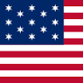
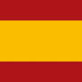
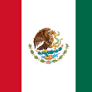
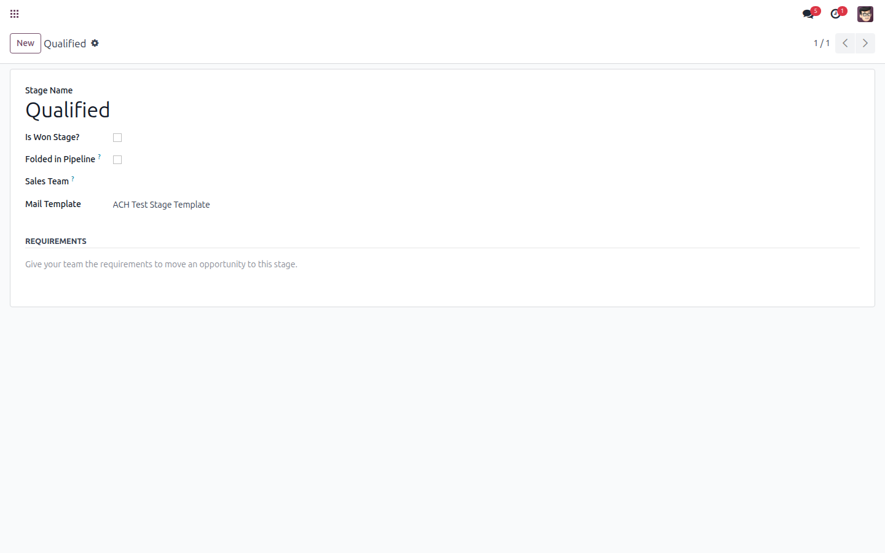
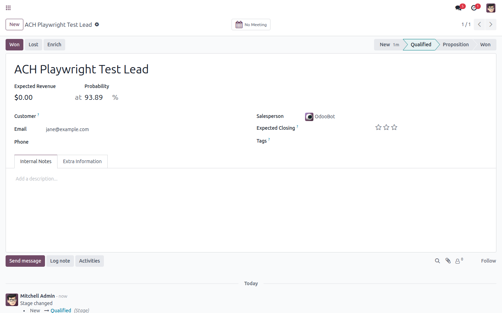

Translated languages









This module helps to automatically send an email based on a previously established email template



1) Activate developer mode, then enter the CRM app, go to Configuration and choose Stages.
2) Open a stage and set the mail template in the "Mail Template" field.

3) When you switch an opportunity to the configured stage, an email is generated and queued according to your email template, and logged in the opportunity's chatter.
